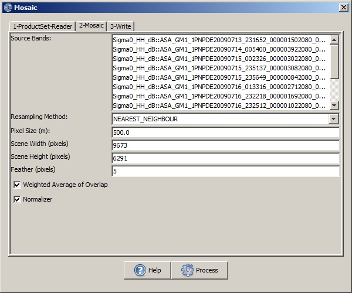
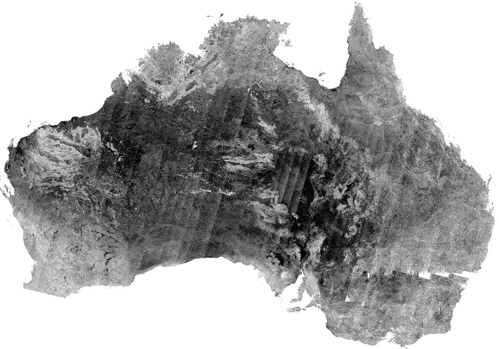

| Mosaic | |
The Mosaic Operator combines overlapping products into a single composite product. The mosaicking is achieved based on the geocoding of the source products therefore the geocoding needs to be very accurate. It is recommended that the source products be Terrain Corrected and Radiometric Corrected first.

The following
parameters are used by the Operator:
average): Averaging option to blend overlapping pixels. To achieve better mosaic result, the
Normalize checkbox below should be selected as well.normalizeByMean): Normalization option to remove mean and normalize standard deviation. Below is an example of a mosaic of ASA_GM1 products that have been Terrain Corrected and Radiometric Corrected. Overlapping areas have been normalized and averaged.

GPT operator: SAR-Mosaic. Generated from the operator source; parameter names are those used in GPT and graph XML.
| Parameter | Type | Default | Allowed values | Unit | Description |
|---|---|---|---|---|---|
sourceBands | String[] | The list of source bands. | |||
resamplingMethod | String | NEAREST_NEIGHBOUR | NEAREST_NEIGHBOUR, BILINEAR_INTERPOLATION, CUBIC_CONVOLUTION | The method to be used when resampling the secondary grid onto the reference grid. | |
average | Boolean | true | Average the overlapping areas | ||
normalizeByMean | Boolean | true | Normalize by Mean | ||
gradientDomainMosaic | Boolean | false | Gradient Domain Mosaic | ||
pixelSize | double | 0 | Pixel Size (m) | ||
sceneWidth | int | 0 | Target width | ||
sceneHeight | int | 0 | Target height | ||
feather | int | 0 | Feather amount around source image | ||
maxIterations | int | 5000 | Maximum number of iterations | ||
convergenceThreshold | double | 1e-4 | Convergence threshold for Relaxed Gauss-Seidel method |